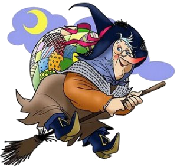
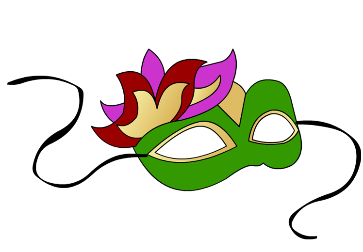
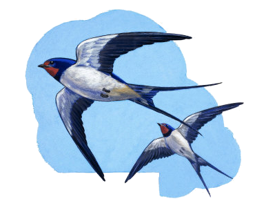
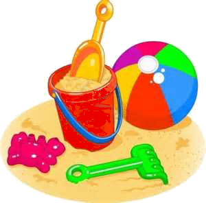
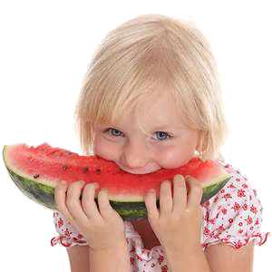
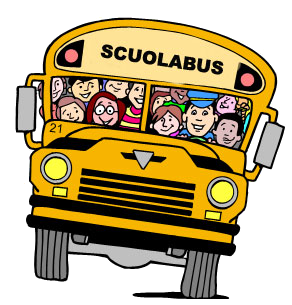
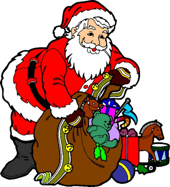

I Mesi
gennaio è freddoloso
febbraio dispettoso
marzo pazzarello
aprile mite e bello
maggio mietitore
giugno trebbiatore
luglio sognatore
agosto gran signore
settembre gran solaio
ottobre castagnaio
novembre triste e stanco
dicembre tutto bianco
-
Gennaio
Gennaio è il primo mese dell'anno e ha 31 giorni.
Il 6 gennaio arriva la befana che porta tanti dolci a tutti i bambini.
Gennaio è un mese molto freddo quindi bisogna coprirsi molto bene.
-
Febbraio
Febbraio è il secondo mese dell'anno e tipicamente ha 28 giorni ma ogni quattro anni ne ha 29.
A febbraio si festeggia il carnevale, un'occasione di divertimento per grandi e piccini che possono indossare le più svariate maschere.
-
Marzo
Marzo è il terzo mese dell'anno
L'8 marzo è il giorno della festa delle donna, istituita per ricordare le conquiste sociali, politiche ed economiche delle donne. In questa particolare ricorrenza si usa regalare a tutte le donne un mazzetto di mimosa, simbolo di questa festa.
-
Aprile
Aprile è il quarto mese dell'anno e ha 30 giorni.
Aprile è il mese delle rondini, che dopo essere emigrate nei paesi caldi con l'arrivo dell'inverno ritornano qui, proprio nei nidi che aveano lasciato.
Torna su -
Maggio
Maggio è il quinto mese dell'anno e ha 31 giorni.
Maggio è il mese delle rose, che spuntano numerose in tutti i giardini.
La seconda domenica del mese tutti i bambini fanno dei regali alle loro mamme in occasione della festa della mamma.
-
Giugno
Giugno è il sesto mese dell'anno e ha 30 giorni.
A giugno tutti i bambini sono felici perchè finiscono le scuole e finalmente iniziano le vacanze.
-
Luglio
Luglio è il settimo mese dell'anno e ha 31 giorni.
A luglio si va tutti al mare, dove ci si diverte facendo tanti castelli di sabbia.
-
Agosto
 -
Settembre
Settembre è il settimo mese dell'anno e ha 30 giorni.
A settembre i bambini ritornano a scuola.
-
Ottobre
Ottobre è il decimo mese dell'anno e ha 31 giorni.
Ad ottobre si fa la vendemmia, dove si raccoglie l'uva e con la quale si fa il vino.
-
Novembre
Novembre è l'unidicesimo mese dell'anno e ha 30 giorni.
A novembre si mangiano le castagne, un frutto molto buono che è difficile da raccogliere perchè è racchiuso in ricci che pungono molto.
-
Dicembre
Dicembre è l'ultimo mese dell'anno e ha 31 giorni.
Il 25 dicmebre arriva Babbo Natale che porta tanti regali a tutti i bambini.
Torna su